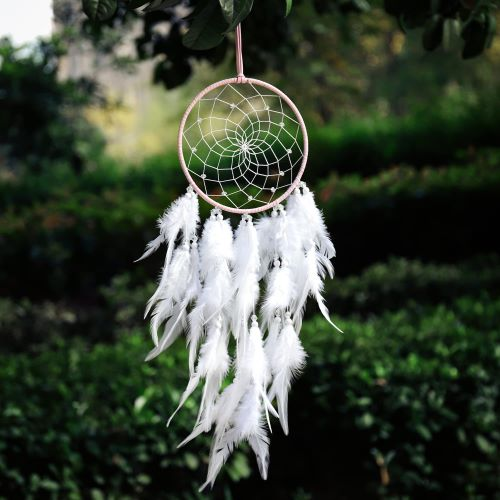

DREAMCATCHERS

Our Dreamcatchers are made by hand and may contain slight variations in the weave.
Dreamcatchers can be ordered in four sizes: mini, small, medium, and large.
Small, medium, and large Dreamcatchers can be crafted to hang from the ceiling or flat against a wall.
Size and Pricing:
| Dreamcatcher Size | Description | Price |
|---|---|---|
| Mini | Mini Dreamcatchers make great keychains or a small decoration for your vehilce's rearview mirror. | $15 |
| Small | Small Dreamcatchers look great on the ceiling or the wall and make great crib mobiles. | $30 |
| Medium | Medium Dreamcatchers also look great on the ceiling or the wall and are great for bedrooms or other small room. | $50 |
| Large | Large Dreamcatchers look best flat against a wall as a statement piece. | $80 |